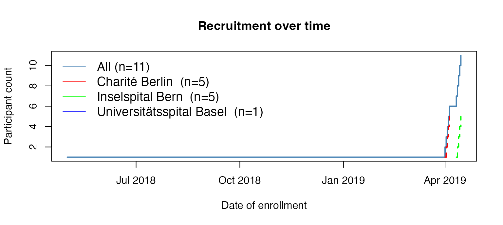

secuTrialR - a walkthrough
Patrick R. Wright, Milica Markovic, Alan G. Haynes
2023-03-01
Source:vignettes/secuTrialR-package-vignette.Rmd
secuTrialR-package-vignette.RmdIntroduction
“If I had just five minutes to chop down a tree I would spend the first two and a half minutes sharpening my axe.”
This R package provides functions for handling data from the clinical data management system (CDMS) . The most important components are related to reading data exports from secuTrial into R. In brief, the package aims to enable swift execution of repetitive tasks in order to allow spending more time on the unique aspects of a dataset. It is developed and maintained by the Swiss Clinical Trial Organisation ().
If you are still challenged by more basic operations in R we suggest reading , which serves as an excellent introduction to the basic concepts of R.
This vignette will teach you how to use the secuTrialR
package and you will likely learn quite a bit about secuTrial exports in
general along the way. Throughout the secuTrialR package
and within this vignette we refer to patients, cases, subjects etc.
enrolled in a secuTrial database as participants.
Install
Please note that R versions >= 3.5 should be used to
run secuTrialR.
Stable release from CRAN
install.packages("secuTrialR", dependencies = TRUE)Development release from GitHub with
devtools
For this you will need to have devtools installed. If
you are working on Windows and would like to install with
devtools you will likely need to install . Installing
everything, including the dependencies, from scratch may take a while
(20-30 minutes).
# install
devtools::install_github("SwissClinicalTrialOrganisation/secuTrialR")
# load silently
suppressMessages(library(secuTrialR))
# show secuTrialR version
packageVersion("secuTrialR")
#> [1] '1.1.0'The CTU05 dataset
Before we continue with the functionalities let’s briefly talk about
the test data which is delivered as a part of the package. We refer to
it as the CTU05 (clinical trial unit project 05) data. This
dataset has been fabricated for demonstration purposes only and is not
real clinical data. Principally it is made up of eight forms. These are
called “surgeries”, “baseline”, “outcome”, “treatment”, “allmedi”,
“studyterminat”, “ae” and “sae”. You will see these names again later
when the data has been read into R. The project setup includes most data
types implementable in secuTrial. It is, however, not exhaustive. Since
the data is delivered with the installation of the
secuTrialR package we can point to it via the
system.file() function.
ctu05_data_location <- system.file("extdata", "sT_exports", "exp_opt",
"s_export_CSV-xls_CTU05_all_info.zip",
package = "secuTrialR")If you work on your own datasets you can specify a path as a regular
character string without using system.file().
secuTrial export options
Prior to reading your data into R you need to export it with the secuTrial ExportSearchTool. We suggest exporting non-rectangular, zipped, English data with reference values stored in a separate table including Add-IDs, centre information, structure information, form status, project setup, without duplicated meta data and without form data of hidden fields. Furthermore, it is important to use “CSV format”/“CSV format for MS Excel” and suggested to select UTF-8 encoding. Most of these options are truly optional and reading your data should work even with differences from the above specifications.
A description of how data can be exported from secuTrial can be found . This description includes screenshots of the export options configuration interface.
Reading a secuTrial data export into R
There is one principle function to read your data
(i.e. read_secuTrial()). Below you can see it in action
with the CTU05 dataset.
ctu05_data <- read_secuTrial(data_dir = ctu05_data_location)
#> Read export successfully.
#> The following export options deviate from the suggested specifications:
#> Data from hidden fields is part of the export.If the “Read export successfully.” message appears your data was correctly read. In this example you are also warned that hidden data fields are in the export which is a deviation from the suggested export option configuraion.
The secuTrialdata object
If you inspect the class() of ctu05_data
you will find that it is a secuTrialdata object.
class(ctu05_data)
#> [1] "secuTrialdata"Really this is only a list containing all the
information from your secuTrial export.
typeof(ctu05_data)
#> [1] "list"The data tables in the secuTrialdata object
We have implemented a custom variation of the print()
function for secuTrialdata objects.
print(ctu05_data)
#> secuTrial data imported from:
#> /Users/runner/work/_temp/Library/secuTrialR/extdata/sT_exports/exp_opt/s_export_CSV-xls_CTU05_all_info.zip
#> table nrow ncol meta original_name
#> vp 4 12 TRUE vp.xls
#> vpfs 8 2 TRUE vpfs.xls
#> fs 8 8 TRUE fs.xls
#> qs 29 8 TRUE qs.xls
#> is 85 9 TRUE is.xls
#> ctr 3 3 TRUE ctr.xls
#> cn 11 15 TRUE cn.xls
#> atcn 0 9 TRUE atcn.xls
#> atcvp 0 16 TRUE atcvp.xls
#> qac 0 12 TRUE qac.xls
#> cts 0 10 TRUE cts.xls
#> miv 0 10 TRUE miv.xls
#> atmiv 0 15 FALSE atmiv.xls
#> baseline 17 107 FALSE baseline.xls
#> atbaseline 0 79 FALSE atbaseline.xls
#> outcome 13 48 FALSE outcome.xls
#> atoutcome 5 47 FALSE atoutcome.xls
#> treatment 11 44 FALSE treatment.xls
#> attreatment 0 45 FALSE attreatment.xls
#> allmedi 17 47 FALSE allmedi.xls
#> atallmedi 2 47 FALSE atallmedi.xls
#> studyterminat 10 41 FALSE studyterminat.xls
#> atstudyterminat 1 39 FALSE atstudyterminat.xls
#> ae 1 66 FALSE ae.xls
#> atae 0 58 FALSE atae.xls
#> sae 2 64 FALSE sae.xls
#> atsae 0 57 FALSE atsae.xls
#> esurgeries 18 11 FALSE esurgeries.xls
#> atesurgeries 0 9 FALSE atesurgeries.xls
#> cl 205 3 TRUE cl.xls
#> atae1 0 20 FALSE atae1.xlsIt shows you where the export archive of your
secuTrialdata object is located, tells you which data
tables (i.e. table) it contains, what the source files
(i.e. original_name) are and specifies each table’s
dimensions (i.e. ncol, nrow).
By now you have possibly realized that all the forms specified earlier (i.e. “surgeries”, “baseline”, “outcome”, “treatment”, “allmedi”, “studyterminat”, “ae” and “sae”) are present, but also that there are many tables that do not correspond to the previously introduced forms.
The majority of the unfamiliar tables are tagged as TRUE
in the meta column. This means that they are metadata
tables. Their names and data structures are fixed in secuTrial exports.
In the following we will briefly explain which information the most
relevant meta tables contain.
-
vp- visitplan definition -
vpfs- visitplan form linkage -
fs- forms information -
qs- questions -
is- items i.e. variable definitions -
ctr- centre information -
cn- casenodes i.e. table of entered study participants -
cl- information how the data in the variables is coded
Furthermore, there is a set of tables whose names start with “at”.
These are audit trail tables. They are only relevant if you need to
investigate changes in the data over time. For example certain values
may be corrected (i.e. changed) due to findings during monitoring visits
at study centres. Last but not least you may have also realized that the
“surgeries” table is called esurgeries. This is because it
is a so-called repetition form. Repetition forms are labelled with a
leading “e” and are implemented as subforms in other forms. In this
case, esurgeries is a subform in baseline and
the linkage is defined by the mnpdocid column in both
tables. If this sounds cryptic to you we suggest you talk so someone who
has implemented a database in secuTrial and let them explain it with a
specific example. It is pretty straight forward when you look at a
concrete implementation.
Accessing the tables and values
Since the secuTrialdata object is a list
and the data tables within this list are
data.frames you can simply access the tables using
$. Let’s say you would like to have a look at the placebo
to verum ratio in your treatment data or what types of
other medication were entered in allmedi.
Data transformations
During the loading process, coded categorical data is transformed.
For example the gender variable in the
baseline form is categorical. The raw data is accessible
via gender and the transformed version of the data is added
during the reading process and becomes accessible via
gender.factor. Thus, data is not overwritten but added with
the .factor extension. If there are issues during
factorization a warning() will inform you of this.
# raw gender data
ctu05_data$baseline$gender
#> [1] 1 NA NA 2 1 2 1 NA NA 1 2 NA NA 1 2 2 NA
#> attr(,"label")
#> [1] "Gender"
# transformed gender data
ctu05_data$baseline$gender.factor
#> [1] male <NA> <NA> female male female male <NA> <NA> male
#> [11] female <NA> <NA> male female female <NA>
#> attr(,"label")
#> [1] Gender
#> Levels: male female
# raw more meds
ctu05_data$allmedi$no_more_meds
#> [1] 1 1 0 1 1 1 0 0 0 1 0 0 1 1 1 1 0
#> attr(,"label")
#> [1] "No further medication"
# transformed more meds
ctu05_data$allmedi$no_more_meds.factor
#> [1] yes yes no yes yes yes no no no yes no no yes yes yes yes no
#> attr(,"label")
#> [1] No further medication
#> Levels: no yesNote that descriptive labels have also been automatically added to the data.
label(ctu05_data$allmedi$no_more_meds.factor)
#> [1] "No further medication"
label(ctu05_data$baseline$gender.factor)
#> [1] "Gender"
label(ctu05_data$esurgeries$surgery_organ.factor)
#> [1] "Organ"Datetime data is also transformed and similarly to the factorization
process the names are concatenated with .date or
.datetime.
# raw
ctu05_data$baseline$visit_date
#> [1] 20190401 20190402 20190403 20190402 20190403 20190404 20190405 20190406
#> [9] 20190407 20190411 20190412 20190413 20190414 20190413 20190414 20190415
#> [17] 20180501
#> attr(,"label")
#> [1] "Date of visit"
# processed
ctu05_data$baseline$visit_date.date
#> [1] "2019-04-01" "2019-04-02" "2019-04-03" "2019-04-02" "2019-04-03"
#> [6] "2019-04-04" "2019-04-05" "2019-04-06" "2019-04-07" "2019-04-11"
#> [11] "2019-04-12" "2019-04-13" "2019-04-14" "2019-04-13" "2019-04-14"
#> [16] "2019-04-15" "2018-05-01"
# raw only head
head(ctu05_data$baseline$hiv_date)
#> [1] 201903052356 NA NA NA NA
#> [6] NA
# processed only head
head(ctu05_data$baseline$hiv_date.datetime)
#> [1] "2019-03-05 23:56:00 UTC" NA
#> [3] NA NA
#> [5] NA NA
# classes
class(ctu05_data$baseline$visit_date)
#> [1] "integer"
class(ctu05_data$baseline$visit_date.date)
#> [1] "Date"
class(ctu05_data$baseline$hiv_date)
#> [1] "numeric"
class(ctu05_data$baseline$hiv_date.datetime)
#> [1] "POSIXct" "POSIXt"Depending on the setup, incomplete dates can be valid entries in a
secuTrial database. Thus they will also occasionally appear in your
exports. The datetime conversion does not work in these cases and
NAs are created. If this happens, secuTrialR
will warn you accordingly and you should have a closer look into the
affected datetime variables and whether you would like to perform
so-called date imputation.
Export options
The secuTrialdata object also contains information on
the export options.
ctu05_data$export_options
#> secuTrial version: 5.5.1.10
#> Time of export on server: 03.10.2019 - 14:43:49 (CEST)
#> Project version: (20.06.2019 - 11:22:04 (CEST))
#> Exported with short names
#> File extension: xls
#> Seperator: ' '
#> 32 files exported
#> including 13 metadata tables
#> Reference values exported - factorize possible
#> Metadata tables:
#> type exportname available
#> forms fs TRUE
#> casenodes cn TRUE
#> centres ctr TRUE
#> items is TRUE
#> questions qs TRUE
#> queries qac TRUE
#> visitplan vp TRUE
#> visitplanforms vpfs TRUE
#> atcasenodes atcn TRUE
#> atcasevisitplans atcvp TRUE
#> comments cts TRUE
#> miv miv TRUE
#> cl cl TRUEexport_options itself is a list. If you are
interested in more information than is printed you can also access it.
Let’s assume you would like to know the project_name and
encoding.
ctu05_data$export_options$project_name
#> [1] "secuTrialR example CDMA"
ctu05_data$export_options$encoding
#> [1] "UTF-8"Much more information is stored in the elements of
export_options. The names of the elements should be
descriptive enough to infer the contents.
names(ctu05_data$export_options)
#> [1] "sep" "date_format" "datetime_format"
#> [4] "date_format_meta" "na.strings" "short_names"
#> [7] "is_zip" "is_rectangular" "audit_trail"
#> [10] "column_names" "lang_not_supported" "dict_items"
#> [13] "refvals_separate" "add_id" "lab_id"
#> [16] "meta_names" "meta_available" "duplicate_meta"
#> [19] "all_files" "data_files" "data_names"
#> [22] "file_end" "extension" "data_dir"
#> [25] "secuTrial_version" "project_version" "project_name"
#> [28] "format_info" "time_of_export" "encoding"
#> [31] "form_status" "centre_info" "hidden_fields"
#> [34] "structure" "proj_setup" "factorized"
#> [37] "dated" "labelled"Generic functions for secuTrialdata objects
Now that you understand the secuTrialdata object we will
show you some generic functions you can use on objects of this
class.
Show the study participants
First off you may be interested in a table of participants.
get_participants(ctu05_data)
#> mnppid mnpaid mnpctrid mnpctrname
#> 1 1204 RPACK-CBE-001 462 Charité Berlin (RPACK)
#> 2 1205 RPACK-CBE-002 462 Charité Berlin (RPACK)
#> 3 1206 RPACK-CBE-003 462 Charité Berlin (RPACK)
#> 4 1207 RPACK-CBE-004 462 Charité Berlin (RPACK)
#> 5 1208 RPACK-CBE-005 462 Charité Berlin (RPACK)
#> 6 1209 RPACK-INS-011 461 Inselspital Bern (RPACK)
#> 7 1210 RPACK-INS-012 461 Inselspital Bern (RPACK)
#> 8 1211 RPACK-INS-013 461 Inselspital Bern (RPACK)
#> 9 1212 RPACK-INS-014 461 Inselspital Bern (RPACK)
#> 10 1213 RPACK-INS-015 461 Inselspital Bern (RPACK)
#> 11 1214 RPACK-USB-123 441 Universitätsspital Basel (RPACK)Please note that the mnpaid column in this table
corresponds to the pat_id column in other tables.
Recruitment over time
You can extract information about participant recruitment per centre
and year by applying annual_recruitment() on a
secuTrialdata object.
annual_recruitment(ctu05_data)
#> Center Total 2018 2019
#> 1 All 11 1 10
#> 2 Charité Berlin (RPACK) 5 0 5
#> 3 Inselspital Bern (RPACK) 5 0 5
#> 4 Universitätsspital Basel (RPACK) 1 1 0Since the centre names often have a systematic addition
(e.g. (RPACK)) we have enabled the option to remove certain parts of the
centre descriptions via regular expressions (i.e. rm_regex
argument). In this case the regular expression removes trailing
parentheses and everything they enclose.
annual_recruitment(ctu05_data, rm_regex = "\\(.*\\)$")
#> Center Total 2018 2019
#> 1 All 11 1 10
#> 2 Charité Berlin 5 0 5
#> 3 Inselspital Bern 5 0 5
#> 4 Universitätsspital Basel 1 1 0It is also possible to plot the recruitment over time.
plot_recruitment(ctu05_data, cex = 1.2, rm_regex = "\\(.*\\)$")
Visit plan visualization
secuTrialR can provide a depiction of the visit
structure, although only where the visit plan is fixed. Black rectangles
in the grid represent a form to be filled (x) during one of the visits
(y).
vs <- visit_structure(ctu05_data)
plot(vs)Completeness of forms
If you are not sure about how complete the data in your export is, it may be useful to get a quick overview of how well the forms have been filled. The below table shows both absolute and relative numbers for a few forms.
fss <- form_status_summary(ctu05_data)
tail(fss, n = 5)
#> form_name partly_filled completely_filled empty with_warnings
#> 6 baseline 3 14 0 0
#> 7 outcome 1 12 0 0
#> 8 sae 0 2 0 0
#> 9 studyterminat 0 10 0 0
#> 10 treatment 0 11 0 0
#> with_errors partly_filled.percent completely_filled.percent empty.percent
#> 6 0 0.17647059 0.8235294 0
#> 7 0 0.07692308 0.9230769 0
#> 8 0 0.00000000 1.0000000 0
#> 9 0 0.00000000 1.0000000 0
#> 10 0 0.00000000 1.0000000 0
#> with_warnings.percent with_errors.percent form_count
#> 6 0 0 17
#> 7 0 0 13
#> 8 0 0 2
#> 9 0 0 10
#> 10 0 0 11Please note that a form is only complete if all required fields have been filled. Thus, a whole study may have 99% completeness on variable basis while showing 0% completeness on form basis. It is currently not technically possible to assess completeness on variable basis in a generic way. Hence, high completeness on form basis implies high completeness on variable basis but NOT vice versa.
If you would rather retrieve information on form completeness for each participant individually you can perform the following.
fsc <- form_status_counts(ctu05_data)
# show the top
head(fsc)
#> pat_id form_name completely_filled partly_filled empty with_warnings
#> 1 RPACK-CBE-001 baseline 3 0 0 0
#> 2 RPACK-CBE-002 baseline 1 0 0 0
#> 3 RPACK-CBE-003 baseline 1 0 0 0
#> 4 RPACK-CBE-004 baseline 1 0 0 0
#> 5 RPACK-CBE-005 baseline 1 2 0 0
#> 6 RPACK-INS-011 baseline 1 0 0 0
#> with_errors
#> 1 0
#> 2 0
#> 3 0
#> 4 0
#> 5 0
#> 6 0Form linkage
Linkages amongst forms can be explored with the
links_secuTrial() function. This relies on the
igraph package to create a network. It is possible to
interact with the network, e.g. move nodes around in order to read the
labels better. The R graphics device ID is returned to the console, but
can be ignored. Forms are plotted in deep yellow, variables in light
blue.
links_secuTrial(ctu05_data)The output can not be shown within this vignette but you should give it a try. Please note that the linkage plot is likely most useful without the audit trail data in the export.
Sampling random participants
During study monitoring it is common practice to check random participants from a study database. These participants should be retrieved in a reproducible fashion, which can be achieved by setting a so-called seed. The below function allows reproducible retrieval for a loaded secuTrial data export.
# randomly retrieve at least 25 percent of participants recorded after March 18th 2019
# from the centres "Inselspital Bern" and "Charité Berlin"
return_random_participants(ctu05_data,
percent = 0.25,
seed = 1337,
date = "2019-03-18",
centres = c("Inselspital Bern (RPACK)",
"Charité Berlin (RPACK)"))
#> $participants
#> mnpaid centre mnpvisstartdate
#> 2 RPACK-INS-012 Inselspital Bern (RPACK) 2019-04-12
#> 4 RPACK-INS-014 Inselspital Bern (RPACK) 2019-04-14
#> 5 RPACK-CBE-005 Charité Berlin (RPACK) 2019-04-05
#> 3 RPACK-CBE-003 Charité Berlin (RPACK) 2019-04-03
#>
#> $rng_config
#> [1] "Mersenne-Twister" "Inversion" "Rejection"Please note that earlier R versions may return different results
because there is a different rng_config
(i.e. RNGkind()). For this reason we have added the
rng_config to the output.
Retrieve score variables
secuTrial allows implementing calculated variables (i.e. scores). Data is not directly entered into these variables but rather calculated automatically. Scores are defined by a set of rules and use the data in other variables as basis. For example the age of a study participant at data entry can be calculated as the difference between the participant’s birthday and the day of data entry.
It is advisable to recalculate or validate score variable data before data analysis. A rule of thumb: The more complex a score is and the more data from different forms is necessary for its calculation the more likely its value should be recalculated. The below function will allow you to detect which variables this concerns.
return_scores(ctu05_data)
#> name itemtype label
#> 1 age Years y (calculated only) AgeRetrieve hidden variables
Sometimes, during a study, certain fields may be hidden because data should no longer be entered into them. If this is the case and the data of these fields is part of your export is likely good to know about it. In this case nothing is hidden.
return_hidden_items(ctu05_data)
#> [1] name itemtype label
#> <0 rows> (or 0-length row.names)Finding changes/differences in project setup implementations
In ongoing studies it is possible that changes to the secuTrial data
entry interface (i.e. the electronic case report forms) are made.
Sometimes these changes may call for adjustments in analysis code. It is
considered good practice to run diff_secuTrial() on the
last export and the current export of a project to at least make
yourself aware of potential changes in the setup. If there are
differences, the results of this function should be interpreted as a
first indicator since they may not cover all alterations. Information is
returned on forms and variables. A detailed list of changes can be
produced in the secuTrial FormBuilder with “Compare project setup”.
For the below diff_secuTrial() showcase we emulated a
changed setup of CTU05 by copying the setup and importing it in the
FormBuilder as a new secuTrial project (CTU06). From this, we created a
data export (v1) and then made a few minor changes and exported again
(v2). If this sounds confusing, never mind. CTU06 v1 is simply a copy of
CTU05. CTU06 v2 is a slighly altered version of CTU06 v1.
ctu06_v1 <- read_secuTrial(system.file("extdata", "sT_exports", "change_tracking",
"s_export_CSV-xls_CTU06_version1.zip",
package = "secuTrialR"))
#> Read export successfully.
#> The following export options deviate from the suggested specifications:
#> Data from hidden fields is part of the export.
#> Short names was not selected.
ctu06_v2 <- read_secuTrial(system.file("extdata", "sT_exports", "change_tracking",
"s_export_CSV-xls_CTU06_version2.zip",
package = "secuTrialR"))
#> Read export successfully.
#> The following export options deviate from the suggested specifications:
#> Data from hidden fields is part of the export.
diff_secuTrial(ctu06_v1, ctu06_v2)
#> $new_forms
#> [1] "mnpctu06anewform" "mnpctu06anothernewform"
#>
#> $new_variables
#> [1] "new_item_in_fu" "new_item_in_new_form"
#>
#> $removed_forms
#> character(0)
#>
#> $removed_variables
#> character(0)As you can see ctu06_v2 contains the two additional
forms mnpctu06anewform and
mnpctu06anothernewform and the two additional variables
new_item_in_fu and new_item_in_new_form.
Conversion to SPSS, STATA, SAS
Given that you are working with R it is unlikely that you need such
conversions for yourself. However, collaborators may ask for data which
is readily importable into SPSS, STATA or SAS. For this you can use
write_secuTrial().
Since this has not been heavily tested or used there may be issues
and you might prefer doing this manually with the haven
package. One particular sticking point is the length of variable names -
R is not restrictive in this respect, but other software can be.
secuTrialR does not truncate names, prefering to leave this
to the user, which can cause write_secuTrial() to fail with
an error.
# retrieve path to a temporary directory
tdir <- tempdir()
# write spss
write_secuTrial(ctu05_data, format = "sav", path = tdir)Subsetting secuTrialdata
In some cases it may be useful to subset your
secuTrialdata object. For example if you have cohort data
and would like to supply a subset of the data for a retrospective study.
We have implemented this option with subset_secuTrial(). It
will truncate your secuTrialdata object and return a new
secuTrialdata object which is a subset of the original
data. It is possible to subset by including or excluding specific
participant ids or centres.
# initialize some subset identifiers
participants <- c("RPACK-INS-011", "RPACK-INS-014", "RPACK-INS-015")
centres <- c("Inselspital Bern (RPACK)", "Universitätsspital Basel (RPACK)")
# exclude Bern and Basel
ctu05_data_berlin <- subset_secuTrial(ctu05_data, centre = centres, exclude = TRUE)
#> If you changed any labels in the secuTrialdata object manually these will be reset to their original state.
# exclude Berlin
ctu05_data_bern_basel <- subset_secuTrial(ctu05_data, centre = centres)
#> If you changed any labels in the secuTrialdata object manually these will be reset to their original state.
# keep only subset of participants
ctu05_data_pids <- subset_secuTrial(ctu05_data, participant = participants)
#> If you changed any labels in the secuTrialdata object manually these will be reset to their original state.
class(ctu05_data_berlin)
#> [1] "secuTrialdata"
class(ctu05_data_bern_basel)
#> [1] "secuTrialdata"
class(ctu05_data_pids)
#> [1] "secuTrialdata"If you subset based on centres all traces of deleted centres will be removed. If you remove based on participant ids all traces of deleted participants will be removed.
# only Berlin remains
ctu05_data_berlin$ctr
#> mnpctrid mnpctrname mnpcname
#> 1 462 Charité Berlin (RPACK) NA
# all centres remain even though all three participant ids are from Bern
ctu05_data_pids$ctr
#> mnpctrid mnpctrname mnpcname
#> 1 462 Charité Berlin (RPACK) NA
#> 2 461 Inselspital Bern (RPACK) NA
#> 3 441 Universitätsspital Basel (RPACK) NASince the truncated object’s class remains unchanged
(i.e. secuTrialdata) you can still use the generic
functions on it. Let’s say you would only like to look at the
recruitment plot for Bern alone.
# keep only Bern
ctu05_data_bern <- subset_secuTrial(ctu05_data, centre = "Inselspital Bern (RPACK)")
#> If you changed any labels in the secuTrialdata object manually these will be reset to their original state.
# plot
plot_recruitment(ctu05_data_bern)… or Bern and Berlin.
# keep only Bern and Berlin
ctu05_data_bern_berlin <- subset_secuTrial(ctu05_data,
centre = c("Inselspital Bern (RPACK)",
"Charité Berlin (RPACK)"))
#> If you changed any labels in the secuTrialdata object manually these will be reset to their original state.
# plot
plot_recruitment(ctu05_data_bern_berlin)
Building URLs to your secuTrial server
If you are creating reports in which you would like to directly link
to specific pages of your secuTrial DataCapture you can use
build_secuTrial_url. If you are no expert regarding the
secuTrial server architecture you would like to build links for, you
should talk to the server admin or consult the
build_secuTrial_url help page. They will be able to guide
you regarding the information for the server,
instance, customer and project
parameters. The docid, however, is included in your export
data in the non-meta data tables of the secuTrialdata
object and can be found in the mnpdocid columns.
head(ctu05_data$treatment$mnpdocid)
#> [1] 181 193 200 205 213 224
head(ctu05_data$baseline$mnpdocid)
#> [1] 180 184 187 191 199 203To demsonstrate build_secuTrial_url we will use
imaginary data for the server, instance,
customer and project parameters. The real
counterparts on your server will likely look structurally similar.
server <- "server.secutrial.com"
instance <- "ST21-setup-DataCapture"
customer <- "TES"
project <- "7036"
# make three links with the first three baseline docids
bl_docids <- head(ctu05_data$baseline$mnpdocid, n = 3)
links <- build_secuTrial_url(server, instance, customer,
project, bl_docids)These are the links:
https://server.secutrial.com/apps/WebObjects/ST21-setup-DataCapture.woa/wa/choose?customer=TES&projectid=7036&docid=180
Of course they are dead ends but maybe you can use them to make out the arguments for your server.
The as.data.frame function
This vignette has been working with the secuTrialdata
object, which is of type list. For some users, working with
a list can be tiresome so secuTrialR provides
an as.data.frame() method to save the
data.frames in the secuTrialdata object to an
environment of your choice.
As an example, we will create an environment called env
and check that it’s empty before running as.data.frame()…
# add files to env
as.data.frame(ctu05_data, envir = env)… and afterwards.
ls(env)
#> [1] "ae" "allmedi" "atae" "atae1"
#> [5] "atallmedi" "atbaseline" "atesurgeries" "atmiv"
#> [9] "atoutcome" "atsae" "atstudyterminat" "attreatment"
#> [13] "baseline" "esurgeries" "outcome" "sae"
#> [17] "studyterminat" "treatment"Substituting env with .GlobalEnv instead
would also be an option and would make the data.frames immediately
accessible without having to refer to an environment.
Frequent warning messages
Certain warning messages can occur quite frequently when
running read_secuTrial(). Some of them may call for
deliberate action and thus it is important to understand them. We
briefly mentioned some of them earlier in this document but will now
more closely explain how they can be interpreted.
Please note that warning messages may “pile up”
depending on the export you are reading. For example this may happen if
there are many date variables with incomplete data. This is no reason
for concern. We suggest that you read them and interpret them based on
the explanations below. We use a_form_name and
a_variable_name as place holders in the examples. If in
doubt you can always work with the raw data because it is never
overwritten.
Dates
The below warning tells you that some data in a date variable could
not be converted during the process of date conversion
(i.e. dates_secuTrial()). This ususally occurs if
incomplete date entries are present. Since the raw data is not
overwritten but rather a variable_name.date or
variable_name.datetime column are added to the dataset you
can specifically see which values could not be converted because the raw
data will contain data while the corresponding
.date/.datetime entires will be
NA. The warning also indicates where to look.
The dummy example below indicates to look at the variable
a_variable_name in form a_form_name.
#> Warning: In dates_secuTrial.data.frame(tmp, datevars, timevars, dateformat, :
#> Not all dates were converted for
#> variable: 'a_variable_name'
#> in form: 'a_form_name'
#> This is likely due to incomplete date entries.Factors
In some cases secuTrial allows differently coded data to be decoded
to the same target value for the same variable. For instance this can
happen if hierarchical lookuptables have been implemented in the
database. Because this interferes with the factorization
(i.e. factorize_secuTrial()) we add the code to the
duplicate decoded value and return the below message to make you
aware.
If you run into this warning message we suggest running
the table() function on the variable in question. This will
likely clarify the above explanation.
#> Warning: In factorize_secuTrial.data.frame(curr_form_data, cl = object$cl, :
#> Duplicate values found during factorization of a_variable_nameLabels
Sometimes the labels of variables in a secuTrial database
implementation may be changed after release of the database. In these
cases all labels (current and previous versions) are added to the
label attribute during labelling
(i.e. label_secuTrial()) and the below warning
is triggered. It indicates which variables in which forms are
affected.
#> Warning: In label_secuTrial.secuTrialdata(d) :
#> The labels attribute may be longer than 1 for the following variables and forms.
#> Likely the label was changed from its original state in the secuTrial project setup.
#> variables: a_variable_name
#> forms: a_form_nameMerging forms in the secuTrialdata object
Naturally, you will sometimes need to merge/join some of the data
from the individual form data stored in your secuTrialdata
object. To achieve this you can use the base R merge()
function. For our dataset we might be interested in merging the
baseline form data with that of the treatment
form. For this we can use the mnpcvpid which uniquely
identifies each participant visit. Since we are only interested in the
rando_treatment variable we will shrink the data in the
treatment form prior to merging.
treatment_shrink <- ctu05_data$treatment[, c("mnpcvpid", "rando_treatment")]Because we do not want to drop non-matching rows from
baseline we set all.x = TRUE. As you can see
from the dim() calls, one column has been added after the
merge. This corresponds to the rando_treatment
variable.
bl_treat <- merge(x = ctu05_data$baseline, y = treatment_shrink,
by = "mnpcvpid", all.x = TRUE)
# check dimensions
dim(ctu05_data$baseline)
#> [1] 17 107
dim(bl_treat)
#> [1] 17 108Another common task may be to merge repetition form data to its
parent form. In our case esurgeries can be naively merged
with baseline via the mnpdocid (from the
secuTrial manual: “Each eCRF document record has a unique document
identifier.”):
bl_surg <- merge(x = ctu05_data$baseline, y = ctu05_data$esurgeries, by = "mnpdocid")Please note, that such naive merging can cause duplication of data if
the ids that the merge is directed by are not unique. This also happened
during the production of bl_surg in the code above.
Participant “RPACK-INS-012” exhibits the mnpdocid 234 twice
in the esurgeries repetition form which causes a
duplication of the baseline data matching
mnpdocid 234.
table(ctu05_data$esurgeries$mnpdocid)
#>
#> 180 184 187 191 199 203 211 216 220 222 230 234 238 243 249 255 265
#> 1 1 1 1 1 1 1 1 1 1 1 2 1 1 1 1 1Lets briefly illustrate the consequences by looking at a
table() of the height variable from the
baseline form before and after merging.
# before merge
table(ctu05_data$baseline$height)
#>
#> 110.1 150 150.1 160 167.9 170.3 170.4 180 180.1 190.2
#> 1 1 1 1 1 1 1 3 3 1
# after merge
table(bl_surg$height)
#>
#> 110.1 150 150.1 160 167.9 170.3 170.4 180 180.1 190.2
#> 1 1 1 1 1 1 1 4 3 1A closer look reveals that 180 now appears four times
instead of three, which can be attributed to the duplication. This is
not a favourable outcome because it can cause confusion and
misinterpretation. A better approach is to change the structure of your
repetition form before merging to make the ids you merge by unique. For
this you need to investigate which data you would like to merge and
design an appropriate stategy. In our example case we are interested in
the surgery_organ. Of course we also need to drag the
mnpdocid along to perform the actual merge.
# write a temporary object
surg <- ctu05_data$esurgeries[, c("mnpdocid", "surgery_organ.factor")]
# only retain non NA rows
surg <- surg[which(! is.na(surg$surgery_organ.factor)), ]
# show it
surg
#> mnpdocid surgery_organ.factor
#> 12 234 Stomach
#> 13 234 OtherIn order to prevent duplication we can restructure the data before merging.
library(tidyr) # pivot_wider
# add a count
surg$count <- 1
# show the data
surg
#> mnpdocid surgery_organ.factor count
#> 12 234 Stomach 1
#> 13 234 Other 1
# make it wide
surg_wide <- pivot_wider(surg, names_from = surgery_organ.factor, values_from = count)
# show the wide data
surg_wide
#> # A tibble: 1 × 3
#> mnpdocid Stomach Other
#> <int> <dbl> <dbl>
#> 1 234 1 1Checking the dimensions before and after merging reveals that the
structure, especially the line count, remains the same except for the
data added from the esurgeries repetition form
(i.e. Stomach and Other). Also, as expected,
the table() of the height variable returns the expected
result (i.e. 180 is present three not four times).
# merge
bl_surg_no_dup <- merge(x = ctu05_data$baseline, y = surg_wide,
by = "mnpdocid", all.x = TRUE)
# compare dimensions
dim(bl_surg_no_dup)
#> [1] 17 109
dim(ctu05_data$baseline)
#> [1] 17 107
# check the height variable
table(bl_surg_no_dup$height)
#>
#> 110.1 150 150.1 160 167.9 170.3 170.4 180 180.1 190.2
#> 1 1 1 1 1 1 1 3 3 1The above description only provides a very brief and simplified
example. Merging strategies need to be individually tailored and require
a good understanding of the data at hand. The
links_secuTrial() function may be helpful to understand
which variables will allow you to merge forms.
A note on mnp* variables
There is a plethora of variables in the tables of secuTrial exports
whose names start with mnp. These are metadata variables
which are e.g. important to logically link the different tables.
Explaining them all is beyond the scope of this vignette. For detailed
explanations, please refer to the secuTrial “Export Formats” user
manual.
sessionInfo()
#> R version 4.2.2 (2022-10-31)
#> Platform: x86_64-apple-darwin17.0 (64-bit)
#> Running under: macOS Big Sur ... 10.16
#>
#> Matrix products: default
#> BLAS: /Library/Frameworks/R.framework/Versions/4.2/Resources/lib/libRblas.0.dylib
#> LAPACK: /Library/Frameworks/R.framework/Versions/4.2/Resources/lib/libRlapack.dylib
#>
#> locale:
#> [1] en_US.UTF-8/en_US.UTF-8/en_US.UTF-8/C/en_US.UTF-8/en_US.UTF-8
#>
#> attached base packages:
#> [1] stats graphics grDevices utils datasets methods base
#>
#> other attached packages:
#> [1] tidyr_1.3.0 secuTrialR_1.1.0
#>
#> loaded via a namespace (and not attached):
#> [1] highr_0.10 cellranger_1.1.0 bslib_0.4.2 compiler_4.2.2
#> [5] pillar_1.8.1 jquerylib_0.1.4 forcats_1.0.0 tools_4.2.2
#> [9] bit_4.0.5 digest_0.6.31 timechange_0.2.0 lubridate_1.9.2
#> [13] jsonlite_1.8.4 evaluate_0.20 memoise_2.0.1 lifecycle_1.0.3
#> [17] tibble_3.1.8 pkgconfig_2.0.3 rlang_1.0.6 cli_3.6.0
#> [21] parallel_4.2.2 yaml_2.3.7 haven_2.5.2 pkgdown_2.0.7
#> [25] xfun_0.37 fastmap_1.1.1 withr_2.5.0 dplyr_1.1.0
#> [29] stringr_1.5.0 knitr_1.42 generics_0.1.3 desc_1.4.2
#> [33] fs_1.6.1 vctrs_0.5.2 sass_0.4.5 systemfonts_1.0.4
#> [37] hms_1.1.2 bit64_4.0.5 tidyselect_1.2.0 rprojroot_2.0.3
#> [41] tufte_0.12 glue_1.6.2 R6_2.5.1 textshaping_0.3.6
#> [45] fansi_1.0.4 readxl_1.4.2 vroom_1.6.1 rmarkdown_2.20
#> [49] tzdb_0.3.0 readr_2.1.4 purrr_1.0.1 magrittr_2.0.3
#> [53] htmltools_0.5.4 ellipsis_0.3.2 ragg_1.2.5 utf8_1.2.3
#> [57] stringi_1.7.12 cachem_1.0.7 crayon_1.5.2Disclaimer
The descriptions of the secuTrial exports used in this vignette and
other secuTrialR documentation correspond to our
understanding of them and come with no warranty. For in depth details
please refer to the original secuTrial manuals.